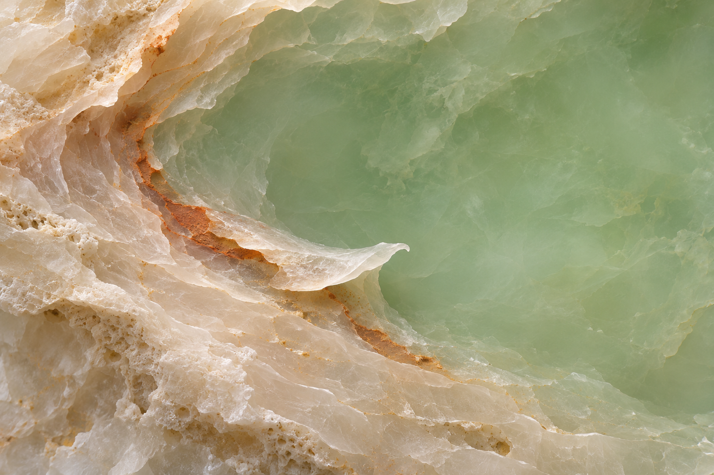

淡绿矿物层理与弯曲的白色薄边，把岩石剖面组织成潮水般的视觉。

打开媒体文件 · 阅读来源说明（原提示词未保留） · 来源与验证
ChatGPT 内置图像生成
1536×1024 PNG，原图字节与 SHA-256 已核，已目视检查，用户已认可。原始提示词未找到，仅提供可核实的来源说明；不声称逐像素复现。
本任务的生成式原创概念图，非真实矿物摄影。原提示词未保留，不补写未知生成参数；当前画面未见人物、品牌或私人素材。未作穷尽相似性检索，不作版权法律保证；公开复用许可尚未选定。